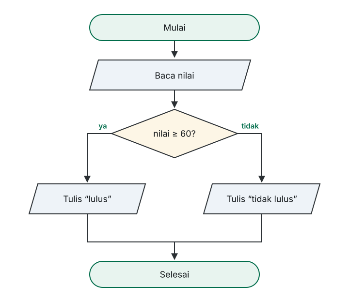

Universitas Ahmad Dahlan Aceh · Fakultas Sains dan Teknologi
Algoritma dan Pemrograman I · INFUAD-003 · 2 SKS · Program Studi Informatika (S1)
Pekan 9
Bagian 01
Sampai pekan lalu program selalu berjalan lurus. Kini garis itu bercabang.
Masalahnya
Dengan runtunan murni, kita tidak punya cara mengerjakannya. Apa pun yang ditulis akan selalu dikerjakan — padahal yang dibutuhkan adalah kadang ini, kadang itu.
Setiap keputusan punya
Bagian 02
Enam cara mengajukan pertanyaan yang hasilnya boolean.
Daftarnya
| Operator | Arti | Contoh | Hasil |
|---|---|---|---|
| = | Sama dengan | 7 = 7 | true |
| ≠ | Tidak sama dengan | 7 ≠ 3 | true |
| < | Lebih kecil dari | 3 < 7 | true |
| > | Lebih besar dari | 3 > 7 | false |
| ≤ | Lebih kecil atau sama | 7 ≤ 7 | true |
| ≥ | Lebih besar atau sama | 7 ≥ 8 | false |
Hasilnya bukan angka, melainkan true atau false.
Perlu ditegaskan
Penugasan
x ← 5
Perintah: isi x dengan 5.
Perbandingan
x = 5
Pertanyaan: apakah isi x sama dengan 5?
Yang pertama sebuah perintah; yang kedua sebuah pertanyaan yang menghasilkan benar atau salah.
Bagian 03
Menggabungkan beberapa pertanyaan menjadi satu.
Menyambung pertanyaan
Semua kemungkinan
| p | q | p AND q | p OR q | NOT p |
|---|---|---|---|---|
| benar | benar | benar | benar | salah |
| benar | salah | salah | benar | salah |
| salah | benar | salah | benar | benar |
| salah | salah | salah | salah | benar |
Jebakan yang sering muncul
Tidak berlaku di pseudocode
70 ≤ nilai ≤ 85
Yang benar
nilai ≥ 70 AND nilai ≤ 85
Pseudocode membandingkan dua nilai pada satu waktu, jadi kedua batas harus ditulis lengkap dan disambung dengan AND.
Bagian 04
Merangkai pertanyaan menjadi keputusan.
Bentuk dasar
IF kondisi THEN aksi ENDIF
Kalau kondisi benar, aksi dikerjakan. Kalau salah, aksi dilewati dan alur berlanjut ke ENDIF.
Ada tindakan untuk kedua kemungkinan
IF kondisi THEN aksi_benar ELSE aksi_salah ENDIF
Hanya satu di antara keduanya yang dikerjakan. Tidak keduanya, dan tidak pernah tidak ada.
Bentuknya dalam diagram

Bagian 05
Ketika dua cabang tidak lagi cukup.
ELSE IF
IF nilai ≥ 85 THEN huruf ← 'A' ELSE IF nilai ≥ 70 THEN huruf ← 'B' ELSE IF nilai ≥ 60 THEN huruf ← 'C' ELSE huruf ← 'D' ENDIF
Konsekuensi urutan
Cabang pertama yang benar yang dipakai.
Cabang nilai ≥ 70 hanya diperiksa bila cabang sebelumnya salah — artinya kita sudah tahu nilai < 85. Karena itu batas atasnya tidak perlu ditulis, dan urutan cabang menentukan hasil.
Perhatikan perbatasannya
| Nilai | Cabang yang terpenuhi | Huruf |
|---|---|---|
| 90 | ≥ 85 | 'A' |
| 84 | ≥ 70 | 'B' |
| 60 | ≥ 60 | 'C' |
| 45 | tidak ada, jatuh ke ELSE | 'D' |
Memakai ≥ dan bukan > membuat nilai tepat 85 tetap masuk 'A'.
Ketika pilihannya seragam
CASE hari OF 1 : nama ← "Senin" 2 : nama ← "Selasa" 3 : nama ← "Rabu" OTHERWISE : nama ← "Hari tidak dikenal" ENDCASE
Cocok untuk menu pilihan atau pemetaan kode ke nama. Untuk perbandingan bertingkat seperti nilai huruf, tetap pakai IF … ELSE IF.
Bagian 06
Dari ganjil-genap sampai harga tiket.
Contoh 1 — mod bekerja
DEKLARASI bilangan : integer BEGIN READ bilangan IF bilangan mod 2 = 0 THEN WRITE "genap" ELSE WRITE "ganjil" ENDIF END
bilangan mod 2 dihitung lebih dulu, hasilnya dibandingkan = 0.
Contoh 2 — hasil pertanyaan disimpan
DEKLARASI nilai : integer kehadiran : integer lulus : boolean BEGIN READ nilai, kehadiran lulus ← nilai ≥ 60 AND kehadiran ≥ 75 IF lulus THEN WRITE "lulus" ELSE WRITE "tidak lulus" ENDIF END
lulus diisi hasil sebuah pertanyaan, bukan hitungan.
Contoh 3
DEKLARASI nilai : integer huruf : char BEGIN READ nilai IF nilai ≥ 85 THEN huruf ← 'A' ELSE IF nilai ≥ 70 THEN huruf ← 'B' ELSE IF nilai ≥ 60 THEN huruf ← 'C' ELSE huruf ← 'D' ENDIF WRITE huruf END
Contoh 4 — tiga jenis pemeriksaan
DEKLARASI umur : integer harga : integer BEGIN READ umur IF umur < 5 THEN harga ← 0 ELSE IF umur ≤ 12 THEN harga ← 25000 ELSE IF umur ≥ 60 THEN harga ← 30000 ELSE harga ← 50000 ENDIF WRITE harga END
Menelusuri seleksi
Nilai huruf, dengan nilai bernilai 72:
| Langkah | Diperiksa | Hasil | Keterangan |
|---|---|---|---|
| 1 | nilai ≥ 85 | salah | lanjut ke cabang berikutnya |
| 2 | nilai ≥ 70 | benar | huruf ← 'B', keluar dari blok |
| 3 | WRITE huruf | — | menampilkan B |
Cabang ketiga tidak diperiksa — begitu satu cabang benar, sisanya dilewati.
Hindari
Selanjutnya
Di iterasi, pola “periksa, lalu ulangi” akan muncul di mana-mana.
Tanpa jawaban benar atau salah
Dua soal lagi tersedia di catatan kuliah.
Terima kasih
Setiap keputusan adalah pertanyaan benar-salah, dan urutan pemeriksaannya ikut menentukan hasil.